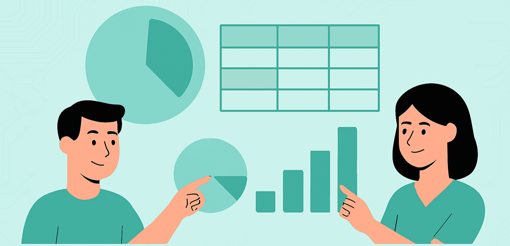

О лекцији¶
Циљеви, исходи и време реализације¶
Потребно време: 3 школска часа (135 минута)
Циљеви¶
Развијање способности анализе података помоћу пивот табела у програму Microsoft Excel.
Стицање вештина визуелизације података помоћу графикона.
Вредновање и избор најефикаснијих начина за визуелно представљање података.
Унапређивање комуникацијских вештина и тимског рада кроз заједничко решавање проблема.
Увежбавање јасног и самоувереног представљања резултата групног рада.
Исходи¶
До краја ове лекције ученици ће бити у стању да:
креирају и тумаче пивот табеле у програму Microsoft Excel ради организовања и анализе података,
направе одговарајуће графиконе (нпр. стубичасти, тракасти, секторски) за визуелни приказ сажетих података,
ефикасно сарађују у групи, деле одговорности и доприносе заједничком задатку,
уважавају различита мишљења и негују конструктивну комуникацију у тиму,
јасно и самоуверено представе групне закључке уз подршку визуелизација података.
У раду са подацима често није највећи изазов прикупљање, већ разумевање њиховог значења. Табеле често садрже и стотине редова, али одговоре на питања која нас заиста занимају не видимо увек на први поглед. Да бисмо уочили обрасце и донели закључке, потребан нам је начин да податке брзо организујемо и посматрамо из различитих углова.
Активност коју смо назвали H2O (Health Habits Observation) има за циљ да кроз пример који вам је близак покаже како податке можете да претворите у корисне информације. Радићете са стварним подацима о навикама у исхрани, вежбању, коришћењу телефона, дружењу и спавању, које ћете сами прикупити и користити пивот табеле и пивот графиконе како бисте их анализирали и визуализовали (упитник за прикупљање података налази се у последњем блоку – Прилог 2). На тај начин видећете како исти скуп података може да одговори на различита питања - у зависности од тога како га организујемо.

Поред техничке вештине, ова активност треба да послужи и за развијање способности аналитичког размишљања попут постављања питања, избора начина приказа података и тумачења резултата. У савременом свету, где се одлуке све чешће заснивају на подацима, разумевање оваквих алата представља важан део дигиталне писмености.

Циљ ове лекције није само да направите пивот табелу, већ да разумете како подаци постају информација.